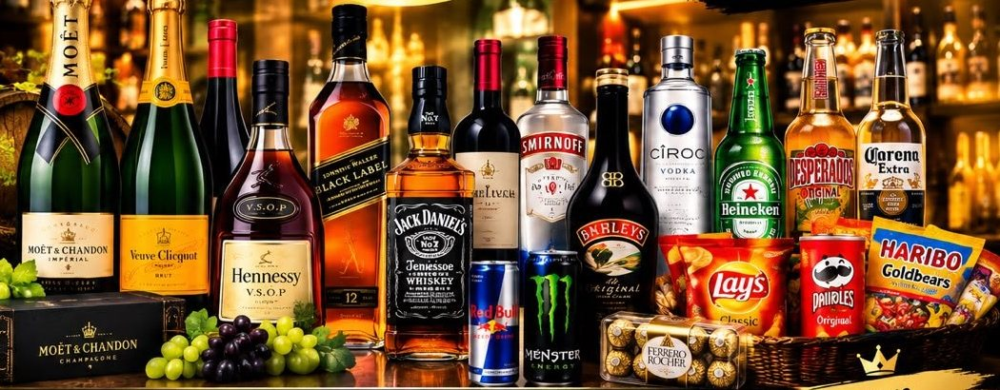

Cave, boissons et épicerie fine à Maroc Anador
Le paradisdes bavins
La qualité au rendez-vous !
Champagnes, vins, spiritueux, bières, confiseries et snacks : passez à la cave ou envoyez-nous votre liste, on prépare votre commande.

Cave, boissons et épicerie fine à Maroc Anador
La qualité au rendez-vous !
Champagnes, vins, spiritueux, bières, confiseries et snacks : passez à la cave ou envoyez-nous votre liste, on prépare votre commande.
